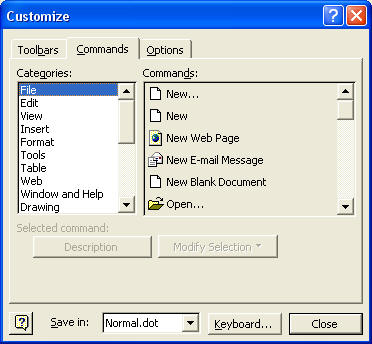
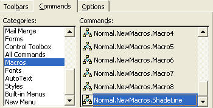
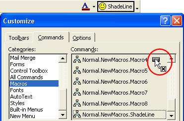
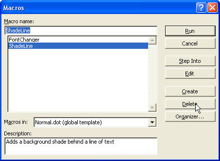

Free
computer Tutorials
|
Free
computer Tutorials
|
|
 home home |
|
||||
How to Delete your Microsoft Word MacrosIn the previous section, you saw how to add a button to the toolbar. You then assigned a Macro to this button. In this part, we'll see how to delete Macros. We'll start with deleting the one from the toolbar.
How to Delete a Macro from the Toolbar
 The categories are Menu bar items (and macros). The File menu is highlighted. On the right, under Commands, are all the items you can put on the File menu. Scroll down until you see Macros on the left hand side, under Categories. Click on the word Macros. Your dialogue box will now look something like the one below:  To get rid of your toolbar button, the idea is to drag it from the toolbar into the Customize box. So do this:
 When you let go of the left mouse button, the Macro toolbar button will be gone. However, the macro itself is still there. You haven't deleted your macro. To get the button back on the toolbar, do this.
Delete a MacroBut suppose you wanted to delete the macro altogether. How do you do that? To delete a macro, do the following:
 You'll get a Message Box popping up asking if you're sure that you want to delete the macro. Click Yes to get rid of the macro altogether. You can select any Macro you like here, and then delete it. But be careful what you delete!
In fact, that wraps up our entire course on Microsoft Word. Hope you enjoyed it! If you did, why not try out one of our other courses? Simply click the link below and explore. |
|||||
|